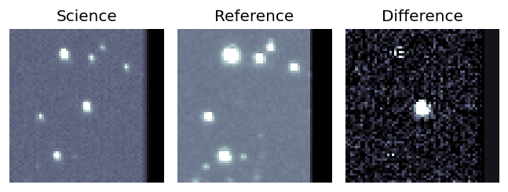
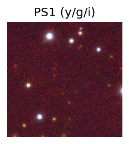
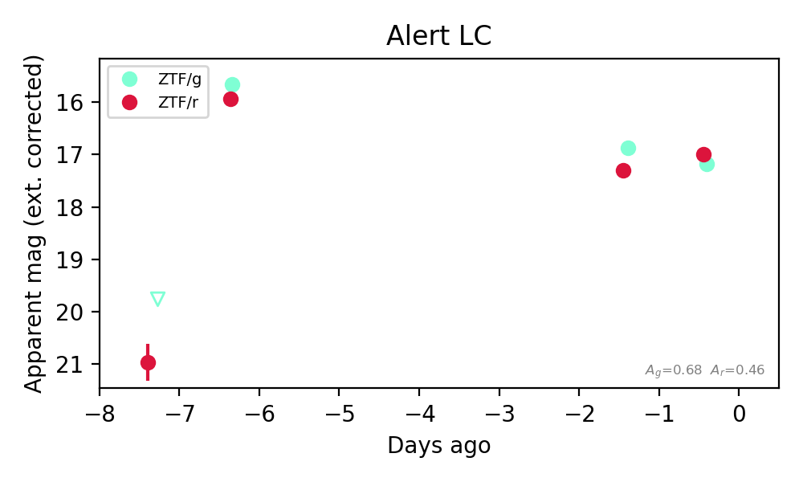

Candidate List 20261027Last night — ZTF: 926 passed basic cuts (15 young) · LSST: 0 passed basic cuts (0 young)Previous Day Next Day
Section 1: New Sources (age<1d) Section 2: Old (1-5d) sources observed last nightplaceholder
Section 2: Older Sources Observed Last Night (3)
0. [ZTF] ZTF26accrvhr (Afterglow?) [Back to Top] [Share] [Trigger Swift] [Fritz Alert] [Fritz Source] [Lasair]RA, Dec: 349.50564, 48.89349 23h18m1.35s, 48d53m36.55sGalactic (l, b): 107.52636, -11.16391 ext(g-r) = 0.218


TESS: Sectors [16 17 57 84]
PS1: 1 source in 3 arcsec Closest: d = 6.01 arcsec photoz=0.61+/-0.10 peak abs mag = -27.19
LegacySurvey: 0 sources in 3 arcsec

Extinction-corrected gr color:
From alerts: 0.18 +/- 0.08 mag
Consistent with synchrotron, g-r>0!
Rise Rate:
g: 4.41 mag/day
r: 1.21 mag/day
Fade Rate:
g: 0.25 mag/day
r: 0.2 mag/day
1. [ZTF] ZTF26accttyl (FBOT?) (TNS: AT 2017cgf) [Back to Top] [Share] [Trigger Swift] [Fritz Alert] [Fritz Source] [Lasair]RA, Dec: 127.28506, 48.4441 8h29m8.41s, 48d26m38.77sGalactic (l, b): 171.08515, 35.82722 ext(g-r) = 0.039


TESS: Sectors [20 47 60]
SDSS (<15 kpc):Found SDSS phot-z: z=0.29; peak abs mag = -25.63
PS1: 0 sources in 3 arcsec
LegacySurvey: 1 sources in 3 arcsec Closest: d = 0.07 arcsec, 190.7 deg (east of north) photoz=0.51 (68% bounds 0.36, 0.71), type=PSF peak abs mag (ext. corrected) = -27.11 (68% bounds -26.24, -27.98)

Extinction-corrected gr color:
From alerts: -0.38 +/- 0.04 mag
Rise Rate:
g: 1.03 mag/day
r: 0.79 mag/day
Fade Rate:
g: 0.12 mag/day
r: 0.12 mag/day
2. [ZTF] ZTF26accuvdb (FBOT?) [Back to Top] [Share] [Trigger Swift] [Fritz Alert] [Fritz Source] [Lasair]RA, Dec: 72.52968, 78.35425 4h50m7.12s, 78d21m15.29sGalactic (l, b): 133.67689, 20.84717 ext(g-r) = 0.133

TESS: Sectors [19 25 26 52 53 59 60 73 79 86]
PS1: 1 source in 3 arcsec Closest: d = 0.97 arcsec photoz=0.11+/-0.05 peak abs mag = -19.98
LegacySurvey: 0 sources in 3 arcsec

Extinction-corrected gr color:
From alerts: -0.11 +/- 0.21 mag
Consistent with synchrotron, g-r>0!
Rise Rate:
g: 0.22 mag/day
r: 0.27 mag/day
Fade Rate: